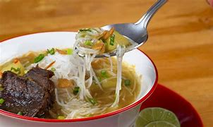

⬅ Kembali
Resep Makanan Soto Padang
Bahan :
- 500 gram daging sapi (campur dengan tulang supaya kaldunya lebih kerasa).
- 2 liter air.
- minyak goreng untuk menumis
Bahan Cemplung :
- 2 batang sereh digeprek
- 5 buah kapulaga.
- 8 kelopak bunga lawang
- 5 buah cengkeh
- 4 cm kayu manis
Bumbu Halus :
- 10 Siung Bawang Putih
- 6 Buah Bawang Merah
- 3 Ruas Lengkuas
- 2 Ruas Jahe
- Garam
Bumbu Pelengkap :
- Sohun Siram
- Perkedel Kentang
- Seledri diiris halus
- Bawang goreng
- Kecap.
Cara Memasak :
- Rebus daging sampai mendidih, masukkan semua bahan cemplung, lanjutkan merebus sampai daging empuk, angkat dan tunggu dingin.
- Panaskan minyak goreng, tumis bumbu halus sampai wangi, campur bumbu yang sudah ditumis ke dalam air rebusan daging
- Iris tipis daging yang sudah direbus, kemudian goreng sampai garing
- Tata sohun, daging didalam mangkok, siram dengan kuah soto, perkedel dan seledri5. Sajikan.
- Sajikan
